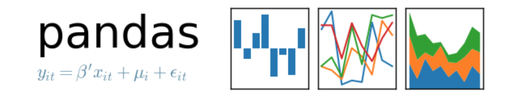
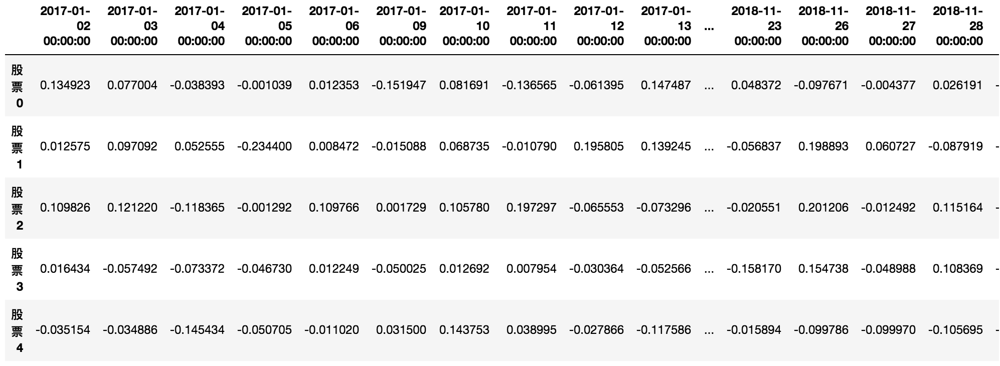
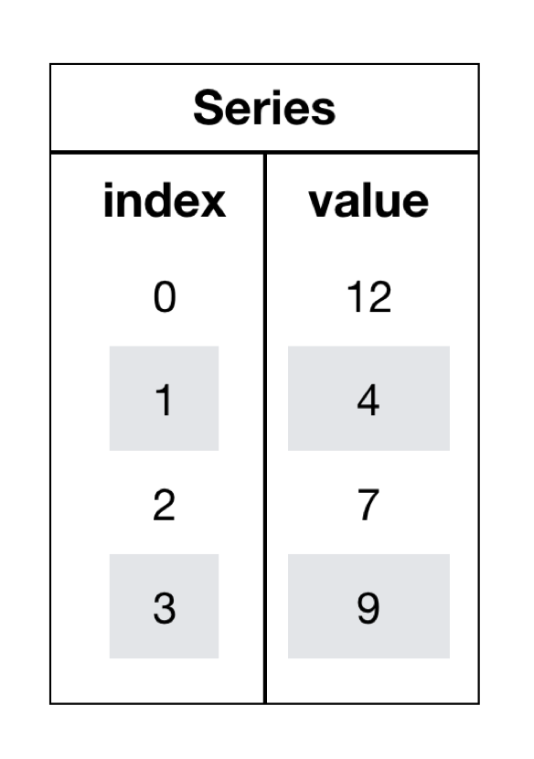

Pandas的数据结构
学习目标
- 目标
- 了解Numpy与Pandas的不同
- 说明Pandas的Series与Dataframe两种结构的区别
- 了解Pandas的MultiIndex与panel结构
- 应用
- 股票涨跌幅数据的修改
1、Pandas介绍

- 2008年WesMcKinney开发出的库
- 专门用于数据挖掘的开源python库
- 以Numpy为基础，借力Numpy模块在计算方面性能高的优势
- 基于matplotlib，能够简便的画图
- 独特的数据结构
2、为什么使用Pandas
Numpy已经能够帮助我们处理数据，能够结合matplotlib解决部分数据展示等问题，那么pandas学习的目的在什么地方呢？
- 便捷的数据处理能力


- Pandas的重要性
对于数据的处理，如果没有pandas，那么可能python就在数据挖掘/机器学习领域领域落后于R
那么在说大数据可能我们可能会听过Hadoop和Spark，它们的有时是基于集群的云端处理数据，如果数据只有几GB，甚至1~2TB，那么pandas也是处理数据的最好选择
回忆我们在numpy当中创建的股票涨跌幅数据形式？
# 创建一个符合正太分布的500个股票504天的涨跌幅数据
stock_day_rise = np.random.normal(0, 1, (500, 504))
array([[-1.47580291, -1.6171524 , -0.3065993 , ..., 0.33796194,
-0.08529695, 0.4951836 ],
[-0.15815135, -0.49150059, -0.90192837, ..., -0.58003107,
0.06213526, -0.48994794],
[ 0.09761985, -0.30173525, -2.01897218, ..., -1.34711536,
-1.15597236, -0.6623075 ],
...,
[-0.43274532, -1.01644526, 0.16935745, ..., -0.40709199,
0.23301604, -0.43792918],
[-0.57734276, 2.30413166, 1.29008026, ..., -0.54980277,
-1.00555547, 1.79315772],
[-1.47725321, 0.1392723 , -0.09880384, ..., 0.57230664,
-0.75429618, -0.4396632 ]])
但是这样的数据形式很难看到存储的是什么的样的数据，并也很难获取相应的数据，比如需要获取某个指定股票的数据，就很难去获取！！
问题：如何让数据更有意义的显示？
3、Pandas的数据结构
3.1三大结构
Pandas有三大数据结构，Series、DataFrame以及Panel。
- Series(一维数据)
- DataFrame(二维数据)
- Panel(三维结构数据/面板数据)
注释：对于Panel，会很少使用，通常会使用使用MultiIndex这种结构解决三维数据表示问题
3.2处理刚才的股票数据
# 使用Pandas中的数据结构
stock_day_rise = pd.DataFrame(stock_day_rise)

3.3初识DataFrame
DataFrame对象既有行索引，又有列索引
- 行索引，表明不同行，横向索引，叫index，0轴，axis=0
- 列索引，表名不同列，纵向索引，叫columns，1轴，axis=1

3.4给股票涨跌幅数据增加行列索引
效果：

- 增加行索引
#构造行索引索引序列
stock_code = ['股票' + str(i) for i in range(stock_day_rise.shape[0])]
# 添加行索引
data = pd.DataFrame(stock_day_rise, index=stock_code)
- 增加列索引
股票的日期是一个时间的序列，我们要实现从前往后的时间还要考虑每月的总天数等，不方便。
使用pd.date_range()：用于生成一组连续的时间序列(暂时了解)
date_range(start=None,end=None, periods=None, freq='B') start:开始时间 end:结束时间 periods:时间天数 freq:递进单位，默认1天,'B'默认略过周末
# 生成一个时间的序列，略过周末非交易日
date = pd.date_range('2017-01-01', periods=stock_day_rise.shape[1], freq='B')
# index代表行索引，columns代表列索引
data = pd.DataFrame(stock_day_rise, index=stock_index, columns=date)
3.5DatatFrame的属性
shape
dtypes
- ndim
- index
- columns
- values
- T
还有一些方便整体查询的属性
- head(5)
- tail(5)
3.5DatatFrame索引的设置
- 修改行列索引值
# 修改行列索引值
data.index[499] = "0000001.SH" # 无法修改
# 通过整体修改，不能单个赋值
data.index = [i for i in range(500)]
- 重设索引
# 重置索引
data.reset_index(drop=True)
- 以某列值设置为新的索引
df = pd.DataFrame({'month':[1,4,7,10], 'year':[1, 1, 2, 2], 'sale':[55, 40, 84, 31]})
# df.set_index(['month'])# 设置新的索引值，但是返回一个新的dataframe
df = df.set_index(['month'])
# 设置多重索引 MultiIndex的结构
df.set_index(['year', df.index])
# 打印df的索引
df.index
注：通过刚才的设置，这样DataFrame就变成了一个具有MutiIndex的DataFrame。后面会详细介绍这样的结构
如果获取某个股票的不同时间数据？这样的结构是什么样的？
3.6Series结构
什么是Series结构呢，我们直接看下面的图：

- series结构只有行索引
我们将之前的涨跌幅数据进行转置，然后获取'股票0'的所有数据
# series
type(data['股票0'])
# 这一步相当于是series去获取行索引的值
data['股票0']['2017-01-02']
3.7创建series
通过已有数据创建
- 指定内容，默认索引
pd.Series(np.arange(10))
- 指定索引
pd.Series([6.7,5.6,3,10,2], index=)
通过字典数据创建
pd.Series({'red':100, ''blue':200, 'green': 500, 'yellow':1000})
3.8 series获取属性和值
- index
- values
4、小结
- pandas的三种数据结构
- dataframe和series的不同